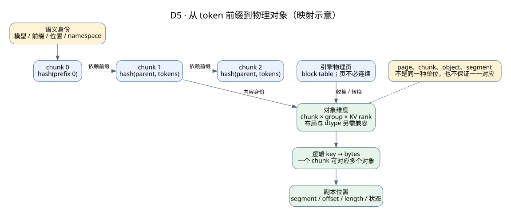

KV Cache 存储详解：数据模型、协议、容量、性能与故障
存储主题 · 设计图册 · LMCache + Mooncake 实现 · 专家能力总纲
这一章面向需要设计和负责 KV 存储子系统的人。目标是把“把 KV 存起来”拆成可验证的协议和预算，再用具体实现检验。先掌握KV 的计算语义；这里重点讨论状态离开引擎之后如何存、如何取，以及失败时怎样保持正确。
1. 先写清系统契约
普通缓存允许 miss；KV 缓存也可以丢弃可重算数据，但不能把错误或不完整的命中交给模型消费。因此应分别定义：
| 契约 | 必须说明什么 |
|---|---|
| 内容身份 | 哪些模型、前缀、位置和配置可以共享？ |
| 表示格式 | bytes 如何映射到 layer、head、rank、group、dtype 和页？ |
| 可见性 | 什么事件之后读者能发现并使用完整对象？ |
| 生命周期 | 谁持有源、目标和远端资源，何时允许回收？ |
| 失败语义 | miss、超时、部分完成、校验失败分别返回什么？ |
| 性能与服务 | 允许等多久，何时放弃加载，怎样限制回源？ |
| 运维边界 | 故障域、隔离、配额、升级、恢复与审计如何实现？ |
“接口返回成功”必须落到其中某个具体事件，不能笼统表示从网络到 GPU 的所有步骤都完成了。
2. 逻辑身份和物理布局分开设计
2.1 key 标识什么
一个教学上的身份描述可以包含：
共享域/租户 + 模型与适配器版本 + 位置语义
+ token 前缀身份 + KV 表示格式 + group/rank
这不是要求把所有字段原样拼进字符串。可以使用稳定的 manifest ID、namespace 和内容 hash，但要能证明被省略的信息在该共享域内固定。tokenizer 和模板会影响最终 token 序列；LoRA、RoPE、模型 revision 等还可能改变相同 token 的状态。
内容寻址通常把父前缀身份纳入后续 chunk 的 hash。相同后缀 token 出现在不同前文之后，不能因此共享深层 KV。hash 一致也不能替代版本和布局契约；外部客户端还要有真正的授权，namespace 本身不等于访问控制。
2.2 四种大小不能混用

| 单位 | 职责 | 常见混淆 |
|---|---|---|
| page/block | 引擎 GPU 内存分配单位 | 不一定连续，也不一定是存储对象 |
| chunk | token 匹配与传输组织粒度之一 | 不保证等于一个 page 或完整对象 |
| object | 存储查找、发布、读取的单位 | 一个 chunk 可拆成多个 group/rank 对象 |
| segment | 提供存储空间或传输寻址的资源区域 | 不等于物理主机或故障域 |
读取对象之后可能还要做页收集/散射、层/页顺序转换和设备拷贝。存储层报告“这些字节读到了”，不自动说明 GPU kernel 能按当前布局解释。
2.3 一个可以手算的映射例子
假设普通 GQA：32 层、8 KV heads、head dimension 128、BF16，全部层为普通 full attention。
每 token = 2 × 32 × 8 × 128 × 2 = 128 KiB
8,192 token = 1 GiB（整个模型的 KV）
chunk = 256 token → 每个逻辑 chunk = 32 MiB
TP=4 且 KV 均匀切分、无复制 → 每 rank 的 chunk = 8 MiB
每请求 32 个 chunk × 4 个 rank = 128 个存储对象
128 × 8 MiB = 1 GiB
这里没有 allocator、元数据和副本开销。TP=4 的除法有明确前提；不能直接套到 KV head 复制、MLA、滑窗或混合状态模型。引擎最终跳过的 token 还受边界与首 token 处理影响。
3. 不可变对象与完整发布

写入可分成保留空间、填充、验证完成、发布四步。重复写同一个内容 key 可以设计成幂等，但需要处理两个写者同时写、一个写者失败、已有 key 内容不一致等情况。
不可变 key 的价值是减少在途读者与覆盖写的冲突。若确实需要更新，必须明确版本号、并发条件和读者看到哪个版本；不能把任意 put 都当成覆盖更新。
多个对象组成一个模型前缀时，还要定义组合完整性。普通 full-attention 示例：
chunk0 chunk1 chunk2
rank0 1 1 1
rank1 1 0 1
共同连续前缀只有 chunk0。批量 API 提高提交效率，不自动提供跨所有对象的事务或完整前缀保证。混合模型要按各 group 的窗口和状态快照语义计算，不能简单套用逐列 AND。
4. 读保护、租约和 buffer 所有权
| 保护机制 | 主要保护对象 | 需要确认的边界 |
|---|---|---|
| 引擎页引用 | GPU 页不被提前复用 | 取消、抢占、异步保存、其他共享请求 |
| 本地读写保留 | staging/resident 内存 | 发布、重复写者、owner、完成回调 |
| adapter 本地锁计数 | 该 adapter 管理的使用/淘汰决策 | 不自动成为跨客户端分布式锁 |
| Store 读租约 | 有时间窗口的远端读取保护 | 排队、时钟假设、到期、节点退出 |
| 设备事件/传输完成 | 在途读写已达到对应完成条件 | 不自动证明对象语义、布局和租约有效 |
| pin/TTL | 保留偏好或生命周期策略 | 不等于持久化，也不替代在途保护 |
资源释放必须在不会再被任务访问之后发生。尤其是超时：它可能只代表调用者没有拿到结果，底层任务仍可能写目标 buffer。安全做法需要隔离目标、排空或确认取消完成，再决定复用；不能仅因控制 RPC 超时就释放内存。
进程重启与地址复用还涉及代际问题：旧回调、旧 descriptor 和旧请求 ID 不能操作新一代资源。这是设计审查点，具体实现是否使用 epoch、session 或其他方式，要沿代码验证。
5. 存储控制面与数据面
目录维护对象位置、大小、状态、副本和保护信息；payload 由相应资源持有。它们的吞吐和故障模式不同：
- 小对象增加目录项、RPC、锁、序列化与分配压力。
- 大对象减少元数据比例，但放大加载时延、在途空间和重试成本。
- 批查询可以减少控制开销，也可能增加尾部等待与返回结果聚合成本。
- 客户端缓存位置可以减少查询，但必须处理 descriptor 过期、代际与失效。
专家设计不能只写一个“高可用 Master”。还要说明主从切换后的旧主隔离、恢复点、已发布与未发布对象的处理、payload 存活验证，以及客户端如何重新取得有效位置。具体 HA 机制在实现层核对。
6. 做容量、对象数和网络三本账
6.1 容量
沿用前面的模型，保留 32,768 个互不重叠的 8K 前缀：
逻辑 KV = 32,768 × 1 GiB = 32 TiB
两份 payload 副本 = 64 TiB
128 台 × 512 GiB/台 = 64 TiB 物理 DRAM
若仅 80% 可用于该池，实际预算 = 51.2 TiB → 装不下
即使增加到 160 台，80% 预算也只是刚好 64 TiB，还要检查这 20% 是否已足够覆盖元数据、注册/暂存、故障恢复和扩缩容余量，不能把所有余量重复计入或完全忽略。前缀共享会降低唯一状态量，需要按唯一 chunk 建模，不能按请求数反复相乘。
6.2 对象和元数据
按 8 MiB/rank-object，有 32 TiB / 8 MiB = 4,194,304 个逻辑对象。若假设每对象目录项 512 B，则仅这部分约 2 GiB；副本描述、key、索引、allocator 和快照还有额外占用。512 B 是预算假设，不是某个实现的测量结果。
把 chunk 减小 8 倍，理论对象数增加 8 倍。收益是否值得，要同时看部分命中精度、控制 QPS、注册与传输开销。
6.3 网络
假设到达 200 请求/s，75% 的请求需要从远端恢复整份 1 GiB，且无本地层命中：
读取 payload = 200 × 0.75 × 1 GiB = 150 GiB/s
400 Gbit/s ≈ 46.57 GiB/s（理想线速）
若规划按 65% 线速，约 30.27 GiB/s/链路
仅聚合读取就至少约需 5 条等效链路
这不是 5 张卡就能满足 SLO 的结论。还要看热点分布、机架上联、TP fan-out、源/目的内存、H2D 和故障降额。若另外每秒保存 50 份新 KV、每份两副本，写 payload 又有约 100 GiB/s；应建立有方向的流量矩阵，结合全双工链路和实际复制路径计算。
7. 判断复用是否值得
已确认候选命中时，比较：
省掉的关键路径计算时间
与
新增查询 + 等待 + 传输 + 转换 + 设备同步的关键路径
有重叠时按时间线计算，不能机械相加，也不能假定完全隐藏。做准入或预取决策时还不知道未来是否复用，需要再考虑复用概率、写入成本、对象寿命与占用空间的机会成本。
建议同时记录：请求/token 命中率、成功加载 token、实际少算的 token、读写字节、host/网络排队、TTFT/ITL、goodput 和每单位有效服务成本。热数据更集中可能提高命中率，同时恶化热点队列。
8. 策略与多租户
准入决定要不要存，淘汰决定删谁，预取决定何时搬，路由决定请求发往哪里。这四项需要共同评估，不能分别优化一个局部指标。
容量、写入带宽、预取在途量和回源计算都应有预算。至少考虑大租户挤占、小租户尾延迟、热点前缀复制、一次性长请求污染，以及某个租户升级后整体命中骤降。
跨租户共享必须有显式策略与授权边界；日志和指标避免泄漏原始 prompt。版本升级可以采用 namespace 隔离、双读新写、受控预热和回滚窗口，但这些是候选设计，不代表当前框架默认具备。
9. 故障矩阵与验收
| 故障 | 正确性目标 | 服务目标与证据 |
|---|---|---|
| 缓存 miss | 不错误跳过计算 | 限制回源并观测 miss 的原因 |
| 部分对象丢失 | 重新计算有效范围 | 避免对无用后缀继续搬运 |
| 写者退出 | 不发布半成品 | 残留空间最终回收且不伤在途任务 |
| 读取超时 | 不消费未知完成的目标 | 重试有界、目标隔离、资源最终释放 |
| 节点/故障域退出 | 不消费失效地址 | 副本选择、重算预算、修复速率 |
| 主节点切换 | 不接受旧主错误状态 | 明确恢复点、隔离和重连 |
| 校验/布局不匹配 | 拒绝该缓存 | 可定位到版本、对象与数据路径 |
| 热点/容量打满 | 不破坏活跃读者 | 准入、背压、公平性、SLO 曲线 |
验收至少包含正常读写、并发重复写、读取期间淘汰、取消/超时、部分 rank 缺失和节点故障。协议推演不能替代真实 GPU 正确性与硬件性能验证。
接着读LMCache + Mooncake 联合链路，把这些问题逐项映射到实际接口、线程、资源和返回值。